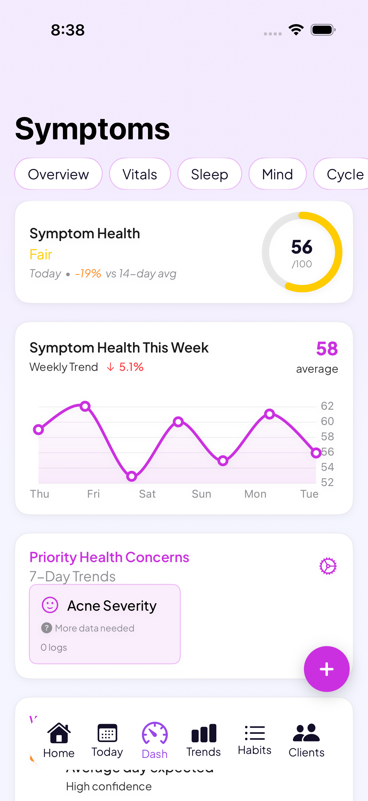

A perimenopause tracker for hot flashes, sleep, mood, and cycle changes
Your cycle stops following its old pattern, and hot flashes, night sweats, brain fog, or mood shifts start showing up. Go Go Gaia is a free app for tracking all of it in one place, cycle changes, symptoms, sleep, and wearable data, so you can see how they connect instead of guessing.
Download Go Go GaiaNot on iPhone? Use the web app in any browser.

Built for the perimenopause transition
Keeps working when cycles turn irregular
Go Go Gaia handles irregular and skipped cycles without breaking, instead of forcing your data into a 28-day template.
Hot flash & symptom tracking
Log hot flashes, night sweats, brain fog, mood shifts, sleep disruption, and more, from a list of 20+ trackable symptoms.
Correlation insights
See which lifestyle factors line up with your symptoms, like weeks with less exercise tracking alongside worse hot flashes, or better sleep on weeks with less evening caffeine.
Wearable integration
Apple Watch, Oura Ring, and Garmin sync automatically, so temperature shifts, HRV changes, and sleep disruption are captured without manual logging.
Medication & supplement tracking
Track HRT, black cohosh, or other supplements alongside your symptoms, so you can see how your body responds over time.
Doctor-ready data export
Bring organized, dated records of your symptoms and patterns to your next appointment instead of trying to recall them from memory.
See how it all connects
Perimenopause rarely shows up as one clean symptom. Cycle changes, hot flashes, disrupted sleep, and mood shifts tend to move together. Go Go Gaia keeps your cycle, symptoms, sleep, fitness, and nutrition in one place, then surfaces real patterns from your own data, like which weeks make your symptoms worse. It's the same correlation engine that carries through every stage, from your first period through perimenopause and beyond, so your history doesn't reset when your body changes.
What you can log
Private by default
Your health data is encrypted and stored securely. Go Go Gaia doesn't run ads or sell your data to third parties, and you can export or delete your data at any time.
Frequently asked questions
Still comparing options? See our perimenopause app comparison.
Track your perimenopause transition in one place
Cycle changes, symptoms, sleep, and lifestyle, together from day one.
Download Go Go GaiaNot on iPhone? Use the web app in any browser.
Tracking for other conditions
IVF tracking · PCOS tracking · Endometriosis tracking · Cycle syncing · All conditions